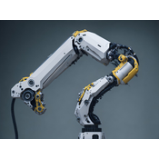

Podemos clasificar los robots en dos categorías:
Tema 3 - Conceptos básicos de la robótica
Tipos de robots
- https://pixabay.com/es/illustrations/ai-generado-robot-ingenier%C3%ADa-8193714/
- https://pixabay.com/es/illustrations/ai-generado-robot-ingenier%C3%ADa-8193715/
- https://pixabay.com/es/illustrations/ai-generado-fabricaci%C3%B3n-industria-8201501/
 https://pixabay.com/es/illustrations/robot-m%C3%A1quina-rob%C3%B3tica-tecnolog%C3%ADa-7925618/
https://pixabay.com/es/illustrations/robot-m%C3%A1quina-rob%C3%B3tica-tecnolog%C3%ADa-7925618/ https://pixabay.com/es/illustrations/trabajadores-tecnolog%C3%ADa-industria-5246640/
https://pixabay.com/es/illustrations/trabajadores-tecnolog%C3%ADa-industria-5246640/


{kind=link}
{kind=link}
{kind=link}
{kind=link}
Más tipos de robots
En este vídeo podemos ver más en detalle otros tipos de robots:
Repaso
- Busca información en internet sobre robots industriales y ejemplos
- Busca información en internet sobre robots de servicios y ejemplos
- ¿Qué son los robots móviles? ¿Para qué sirven?
Obra publicada con Licencia Creative Commons Reconocimiento Compartir igual 4.0